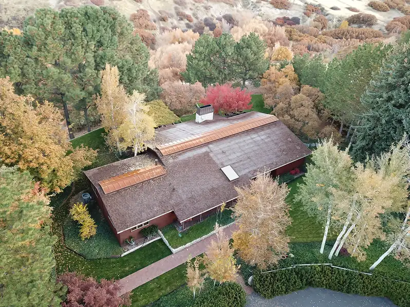
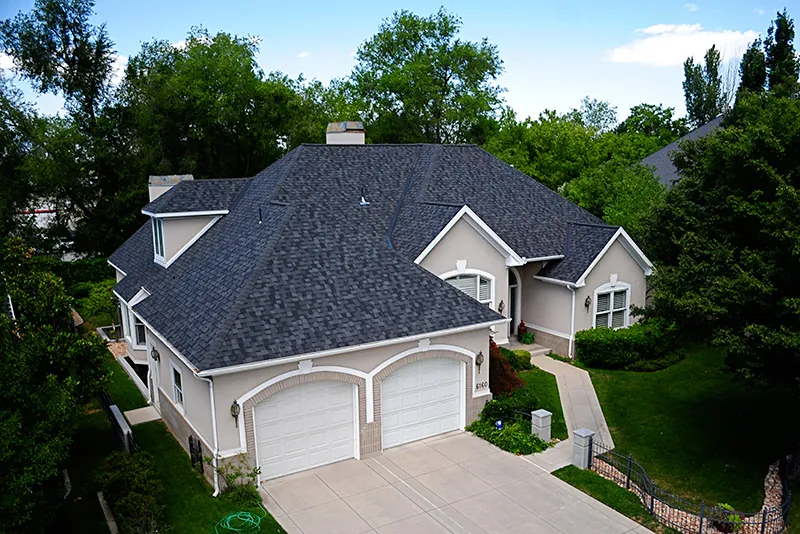
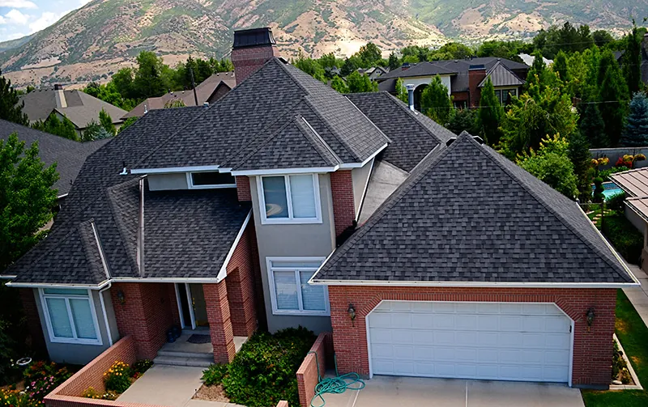
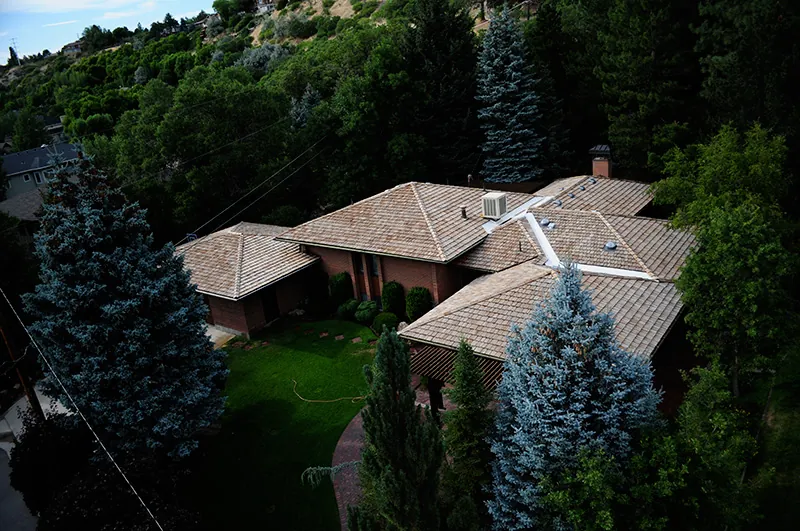
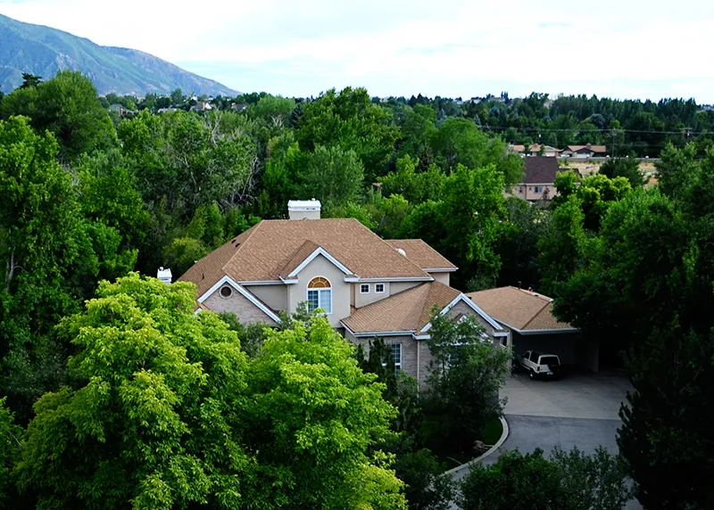
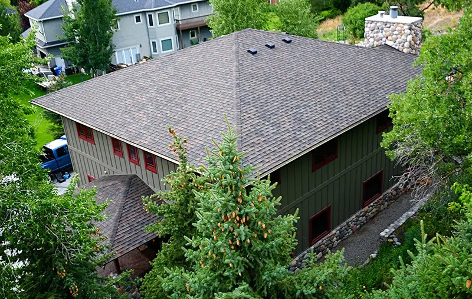
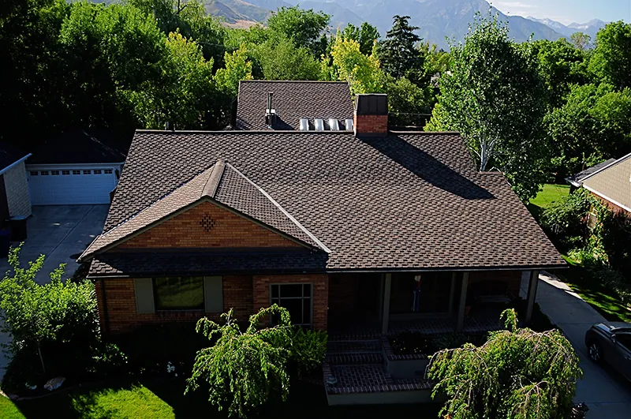
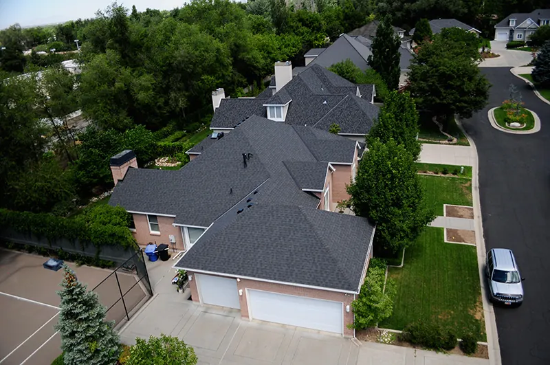

You Deserve a Roof You Can Trust
Roof damage is stressful enough without wondering whether your contractor is being straight with you.
That is exactly what we are here for. American Roofing has been serving Utah homeowners with accurate answers and quality work.
- Thorough roof inspection
- Transparent, itemized quotes
- Insurance and documentation support
We explain your options clearly and strive to help you make the right call for your home and your budget.
Signs Your Utah Roof Needs Repair or Replacement
Do not wait for a leak to become a bigger problem. Look for:
- Broken, curling, or missing shingles
- Damaged or failing flashing
- Granules collecting in your gutters
- Moss or algae growth
- Water stains on interior ceilings or walls
- Shingle pieces in your yard after a storm
If you are seeing any of these, an inspection is the right first step.
Repair or Replace? Here’s How to Determine What You Need
Not sure what you need? Here is a simple breakdown for most Utah roof issues.
| Repair | Replace | |
| Roof Age | Under 15 years | 15–25 years or more |
| Damage | Isolated or localized | Widespread or systemic |
| Shingle Condition | Mostly intact | Curling, missing, or deteriorating across areas |
| Leaks | Single area | Multiple areas |
| Budget | Smaller, immediate fixes | Planned investment |
| Warranty | Still active | Expired or voided |
If you’re still not sure what you need, our residential roof contractors assess your roof and give you an honest, personalized recommendation.
Warranty Coverage You Can Count On
Every installation includes manufacturer warranty documentation and workmanship coverage. We handle the registration, explain what is covered, and stay available if you ever need to use it.
Things to Consider Before Moving Forward
Whether you’re repairing or replacing, here is what you need to think through:
- Cost and Budget: We provide transparent, itemized quotes so you know exactly what you are paying for before any work begins.
- Material Options: We offer asphalt shingles, stone-coated steel, standing seam metal roofing, TPO, PVC, EPDM, and BUR. We match existing materials wherever possible for consistency and warranty coverage.
- Insurance and Storm Damage: If your roof was damaged by severe weather, homeowner’s insurance may cover part or all of the cost. We help you understand your options.
- Disruption to Your Home: We remove and reinstall accessories like satellites and solar panels, protect your yard and vehicles, and clean up completely before we leave.








Our Work Across Utah
American Roofing has offered residential roof repair and replacement services in Utah for more than 70 years. From single-family homes to townhouses and condos, our crews bring the same level of care and craftsmanship to every project.
American Roofing Company Reviews
Our Residential Roofing Process
Here’s our residential roof repair and replacement process step-by-step.
Step 1: Free Quote
We assess your roof, recommend a solution, and provide project pricing at no cost.
Step 2: Inspection
For storm damage, insurance claims, or uncertain conditions, we conduct a full roof inspection and walk you through what we find.
Step 3: Findings and Recommendation
We give you a clear recommendation, whether that’s to repair, restore, or replace your roof, communicating any clear trade-offs.
Step 4: Scope and Bid
We offer a detailed scope of work and project pricing before anything is scheduled.
Step 5: Scheduling and Execution
We work around your schedule and clean up completely each day.
Step 6: Warranty
All installations come with manufacturer warranty documentation and workmanship coverage so you are protected long term.
Local Residential Roofing Services
American Roofing handles every aspect of residential roofing for Utah homeowners. Our crews are trained across all major roof systems and materials, so whatever your home needs, we can take care of it.
Roofing Materials We Install
Our team of Utah residential roof replacement contractors works with CertainTeed and Malarkey Roofing Products, two of the most trusted names in residential roofing.
- For pitched roofs, we offer asphalt shingles, stone-coated steel, and standing seam metal roofing in a variety of colors and styles.
- For flat or low-slope roofs, we install TPO, PVC, EPDM, and BUR systems.
No matter the project, we match materials to your home, your budget, and your long-term goals.
Townhouse, Condo, and Multifamily Roofing
Townhouse and condo roofs carry unique challenges, including varying slopes, shared structures, and additional load from HVAC and other systems. American Roofing has experience across all residential roof configurations and can provide accurate quotes for multifamily and attached-home projects.